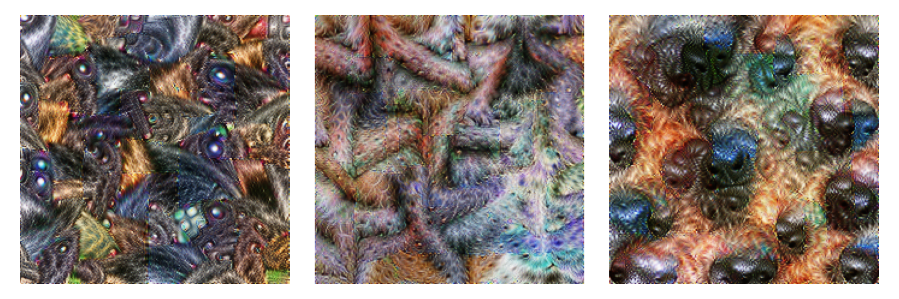
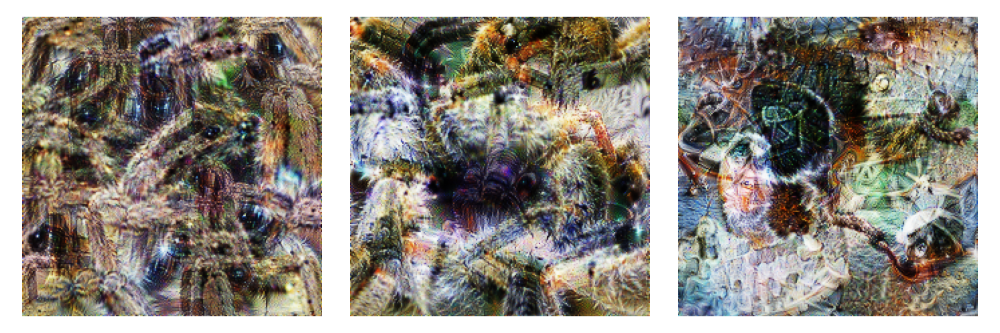
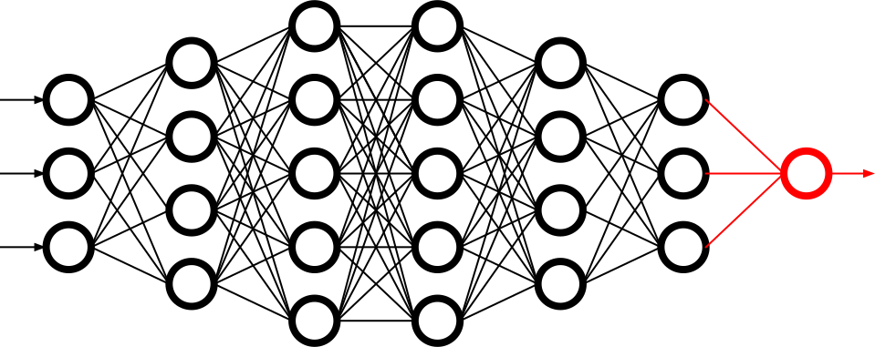

Machine Learning for Human-Centered Solutions
Interpretability, Emotion Recognition, and Therapeutic Innovation
Dominik Pegler
BACKGROUND
Rapidly Evolving Landscape of Technology
- Reshapes communication, work, and leisure
- Human-Computer Interaction (HCI) ensures accessibility and efficiency
- Challenges (e.g., Transparency & Interpretability, Emotional Intelligence)
{kind=link}
{kind=link}
→ Improve HCI by focussing on cognitive and affective awareness
Cognitive Awareness
Joint Human-Machine Problem Solving
- Examples: Cobots (collaborative robots) in engineering and surgery, autopilot systems, self-driving cars
- Project Focus
- Interaction Setting: Problem-solving game
- Improvement: Enhance understanding (interpretability)
{kind=link}
{kind=link}
Affective Awareness 1/2
For effective and natural human-computer interactions, computers must recognize and respond to human emotions (Affective Computing; Picard, 1997)
- Examples: Interfaces with emotional content, e.g., images on websites, mobile apps
- Project Focus
- Interaction Setting: Computerized exposure therapy
- Improvement: Automatic recognition of fear potential in images

Affective Computing (1997) by Rosalind Picard.
“Affective Computing (1997).” under All rights reserved or Unknown licensing information; from https://www.penguin.com.au/
{kind=link}
Affective Awareness 2/2
For effective and natural human-computer interactions, computers must recognize and respond to human emotions (Affective Computing; Picard, 1997)
- Examples: Recommender systems, care robot, counseling chatbot
- Project Focus
- Interaction Setting: Computerized exposure therapy
- Improvement: Optimize sequence of stimulus presentation in response to patient's state
Affective Computing (1997) by Rosalind Picard.
“Affective Computing (1997).” under All rights reserved or Unknown licensing information; from https://www.penguin.com.au/
Overview
JOINT HUMAN-MACHINE PROBLEM SOLVING
Problem Setting
Machine Problem-Solving
- Increasingly taking over human domains
- AI getting more complex → black boxes → lack of trust
- Trust issues not new (Classical AI in 1950s)
Evaluating Human Interpretability
- Human-in-the-loop approach to evaluate interpretability
- Understanding how a machine makes a decision
- Critical for trust and collaboration with machines

Human-in-the-loop.
“Human-in-the-loop” by Dominik Pegler under CC BY-SA 2.5 Generic; from Created using Google Docs
Bin-Packing Problem
- Abstract representation of real-world scenarios (e.g., scheduling)
- Pack items into boxes
- Goal: Fill the boxes as much as possible
- Constraint: You cannot overfill the boxes

Figure 1: A human performing the bin packing task.
Optimal Solutions

Figure 2: The machine (CP-SAT) providing possible optimal solutions.
Question
"What makes a solution interpretable?"
H1: Heuristic
- Humans use (greedy) heuristics → greedy solution
- Similarity to greedy solution is measured by graph edit distance (Sanfeliu & Fu, 1983)

→ Solutions more interpretable if similar to greedy solution
H2: Simplicity
- Bins can look more or less simple/complex
- Formalized as log-probability that a mixture model (2 dirichlet, 1 geometric distribution) returns for each bin composition

→ Solutions more interpretable if simple
H3: Representation
- Items and boxes can be sorted by size or at random
- Formalized as rank correlation between the actual order and the sorted order

→ Solutions more interpretable if sorted
Online-Experiment
N = 73 participants (exploratory sample)
Online-Experiment
N = 73 participants (exploratory sample)
Results

Figure 3: Fixed Effects Estimates of Predictor Variables (x-axis) on Choice (y-axis) in Multilevel Analysis. The plot displays the estimated fixed effects (with 95% confidence intervals) for the three predictors. The effects are adjusted for random effects at the group level.
- All three predictors relevant for people's choices
- Order and Heuristic most influental
- Explained variance: R²=0.17
- Exploratory sample (73 participants × 25 trials = 1825 trials)
Limitations
- Did we measure interpretability?
- Focus on small problems (diversity of solutions limited)
- Only tested for optimal solutions, no suboptimal solutions
→ Follow-up publication, e.g., with collaboration task to address limitation 1
Current Status
- Completed: Experimental design, analysis pipeline and pilot data collection
- Pending:
- Preregistration
- Confirmatory data collection & analysis
- Write draft
- Publication: Early 2025
- Target journals: International Journal of Human-Computer Studies, Computers in Human Behavior, Behaviour and Information Technology


INTERACTION WITH EMOTIONAL AWARENESS
Problem Setting

Figure 4: The stimulus set.
Figure 5: Rating the fear level of each image.

Figure 6: Example rated images.
- Interaction Setting: Computerized Exposure Therapy
- Images with emotional content (e.g., spiders)
- Usage requires information, e.g., how much fear they provoke
- Fear ratings for 313 spider images (Karner et al., 2024)
- Improvement: Automatic evaluation of fear potential in new images
Research questions
Q1: Can a machine learning model built for object recognition learn a latent construct such as fear?
Q2: How does the model arrive at its judgments and how do they differ from human judgments?
Deep Neural Networks
- Use deep neural networks to rate new images (LeCun et al., 2015)
- Pre-trained on large datasets (ImageNet; Deng et al., 2009)

Architecture of a convolutional neural network (CNN)
“CNN architecture.” under CC0 1.0; from developersbreach.com
Deep Neural Networks
- Use deep neural networks to rate new images (LeCun et al., 2015)
- Pre-trained on large datasets (ImageNet; Deng et al., 2009)
Architecture of a convolutional neural network (CNN)
“CNN architecture.” under CC0 1.0; from developersbreach.com
- Transfer Learning (Yosinski et al., 2014): Adapt & fine-tune on own data (313 images with fear ratings) → "Spider-Fear-Network"
First Results
Predictions

Figure 7: Predictive performance of the CNN model for each image.
- Promising predictive accuracy
- Model: ResNet50 (He et al., 2015)
- Training is possible on standard PC hardware (hours–days)
Attributions
Attributions
Gradient-weighted Class Activation Mapping (Grad-CAM; Selvaraju et al., 2020)

Attributions
Gradient-weighted Class Activation Mapping (Grad-CAM; Selvaraju et al., 2020)

Attributions
Gradient-weighted Class Activation Mapping (Grad-CAM; Selvaraju et al., 2020)

Attributions
Gradient-weighted Class Activation Mapping (Grad-CAM; Selvaraju et al., 2020)

Feature Visualization
Feature Visualization
What does a neuron in each layer look for?
Early Layers
Figure 8: Activation patterns in 9 example neurons for layer 1 (left), layer 2.1 (middle) and layer 2.2 (right).
Feature Visualization
What does a neuron in each layer look for?
Intermediate Layers

Figure 9: Activation patterns in example neurons for layer 3.1 (left), layer 3.2 (middle) and layer 3.3 (right).
Feature Visualization
What does a neuron in each layer look for?
Last Layers

Figure 10: Activation patterns in example neurons for layer 5.1 (left), layer 5.2 (middle) and layer 5.3 (right).
Feature Visualization
What does a neuron in each layer look for?

Final Output Node

Figure 11: An example image that maximizes the final output "Fear".
Current Status
- Completed: Concept, Analysis Pipeline
Pending:
- Explore more models (larger ones, vision transformers, …)
- Investigate overlap with human judgments
- Write draft
- Publication: 2025
- Target journals: International Journal of Human-Computer Studies, IEEE Transactions on Affective Computing, Computers in Human Behavior, Behaviour and Information Technology
OPTIMAL INTERACTION IN EXPOSURE THERAPY
Problem Setting
- Interaction Setting: Computerized Exposure Therapy
- Improvement: Find optimal stimulus sequence based on patient's state
- Challenges:
- Highly complex and individualized process
- Inconsistent and subjective protocol tailoring
- High-dimensional variable space
Reinforcement Learning

Figure 12: Exposure therapy as a reinforcement learning setting.
- Reinforcement Learning (RL; Sutton & Barto, 2018) offers a data-driven approach
- Agent learns optimal actions through trial and error
- Therapist: Deep RL Algorithms like Deep Q Networks (DQN; Mnih et al., 2013)
- Simulated Patient: e.g., Rescorla & Wagner (1972) \(F_{\text{expected}} \leftarrow F_{\text{expected}} + \alpha (F_{\text{actual}} - F_{\text{expected}})\)
Research Questions
Q1: How can RL model fear extinction and optimize therapy protocols?
Q2: Can RL improve consistency and objectivity in exposure therapy?
Current Status
- Completed: Concept (partly)
- Pending:
- Literature Review
- Select Algorithms
- Run Simulations
- Design Experiment
- Publication: 2026
- Target journals: International Journal of Human-Computer Studies, IEEE Transactions on Affective Computing, Computers in Human Behavior, Behaviour and Information Technology
Open Science
All data, code, material, preregistrations will be made openly available on osf.io
Schedule

Summary
- First results show us potential factors that matter for interpretability (e.g., heuristics)
- AI models can learn emotional potential in images, but the "how" remains open
- Reinforcement learning is a promising approach for finding good interaction protocols in computerized exposure therapy